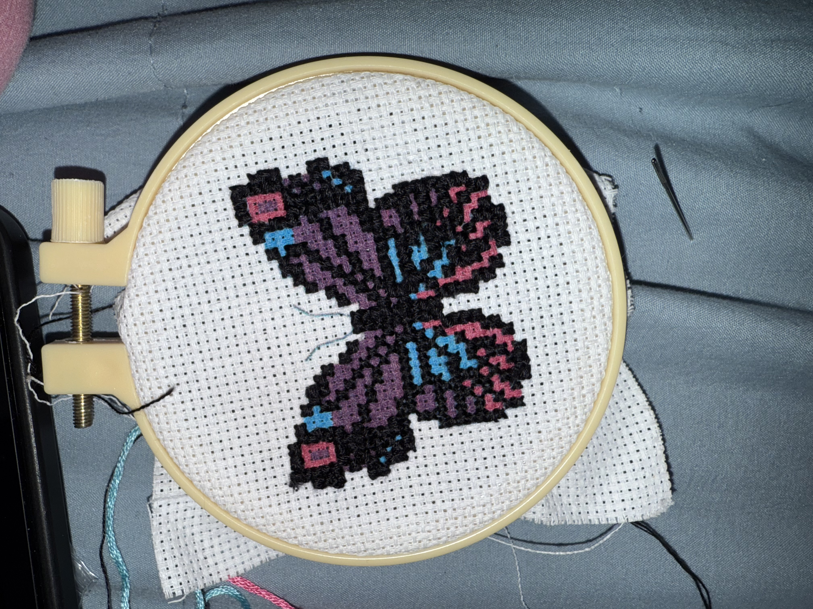
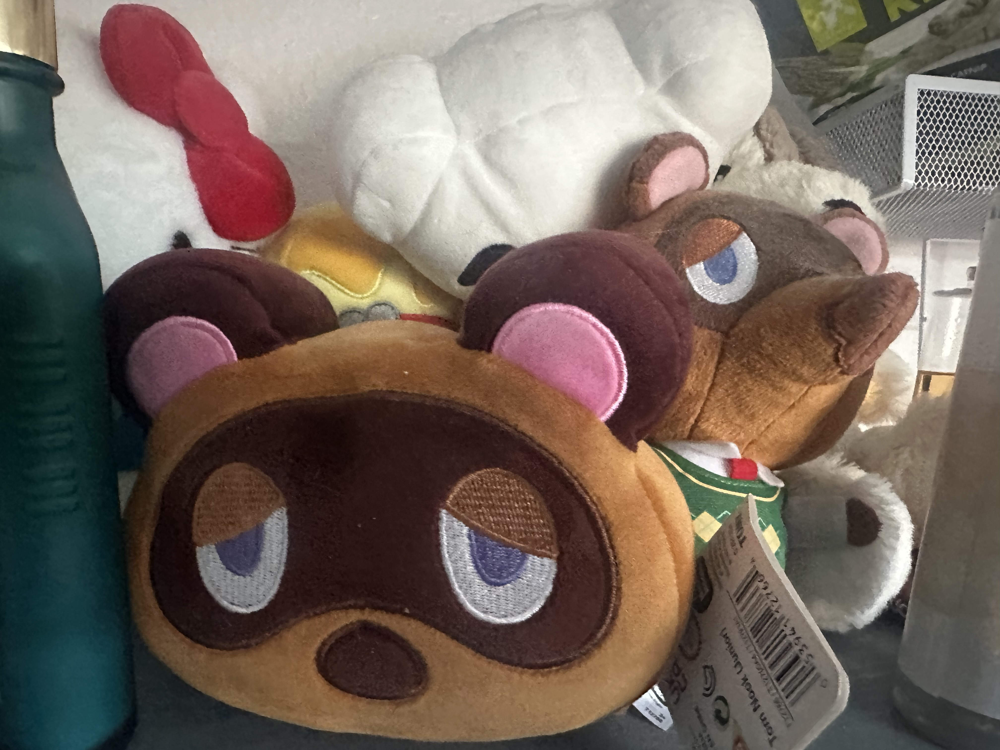
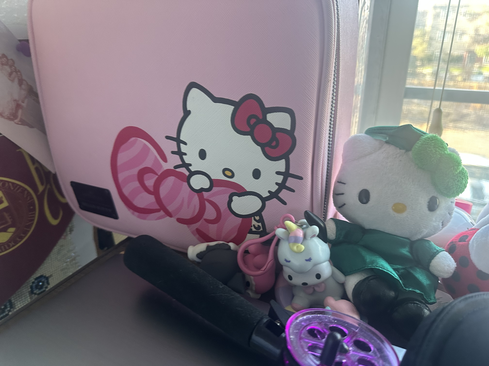
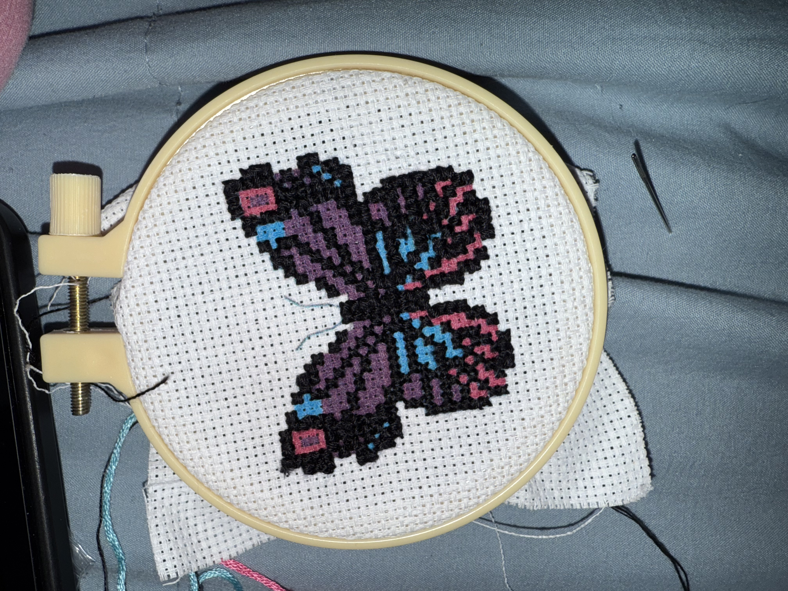
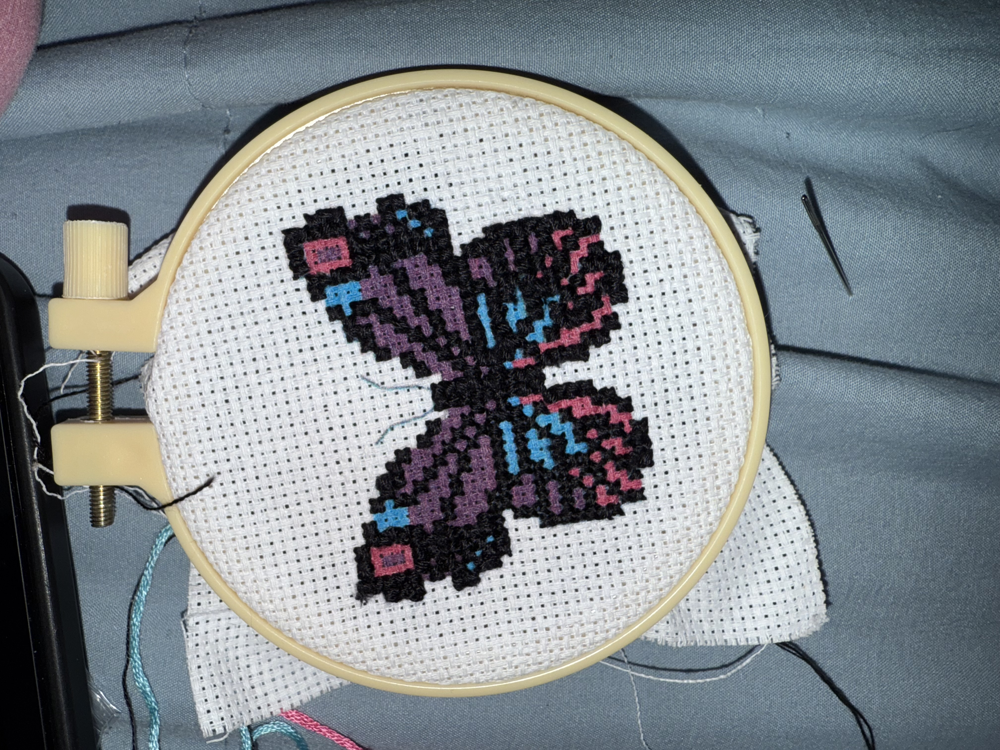

Jasmine liked building things out of Lego and other similar building blocks.The building blocks she has the most of are Hello Kitty and Animal Crossing.Jasmine also likes making things out of art and crafts.


Jasmine likes collecting stuffed animals/toys.The stuffed collectables she mainly gets are Hello Kitty and Animal Crossing.Jasmine ikes to go to the gym at least once a day and taking her younger sister Amy with her.
 
